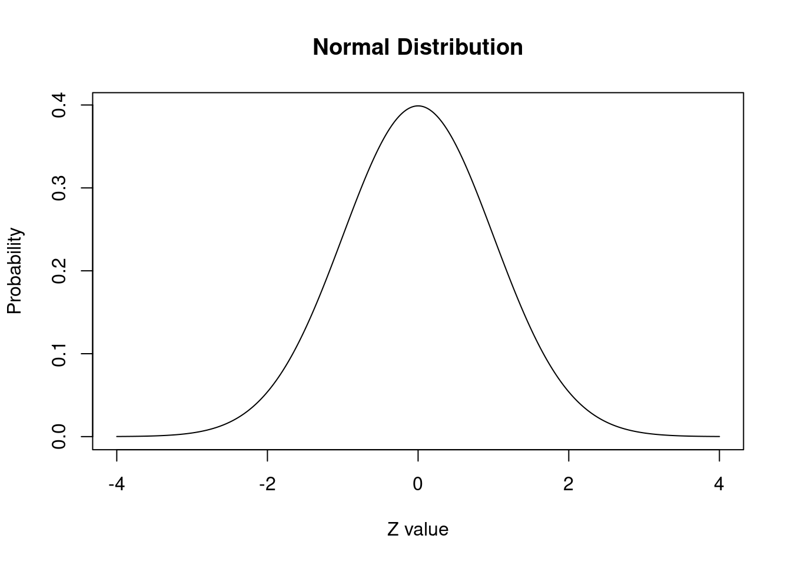
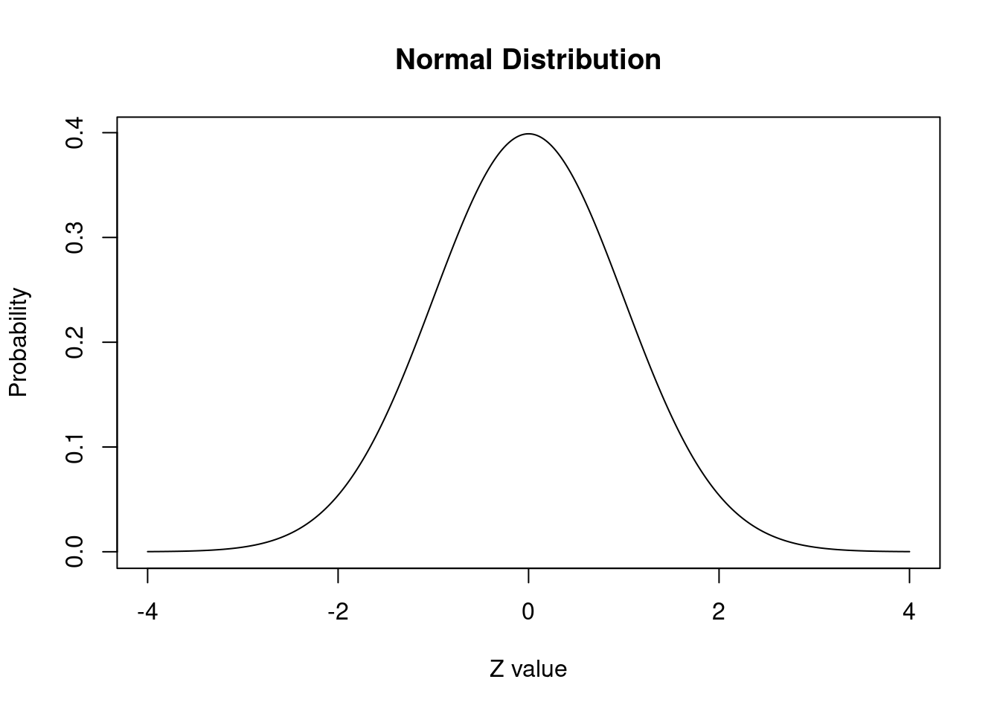
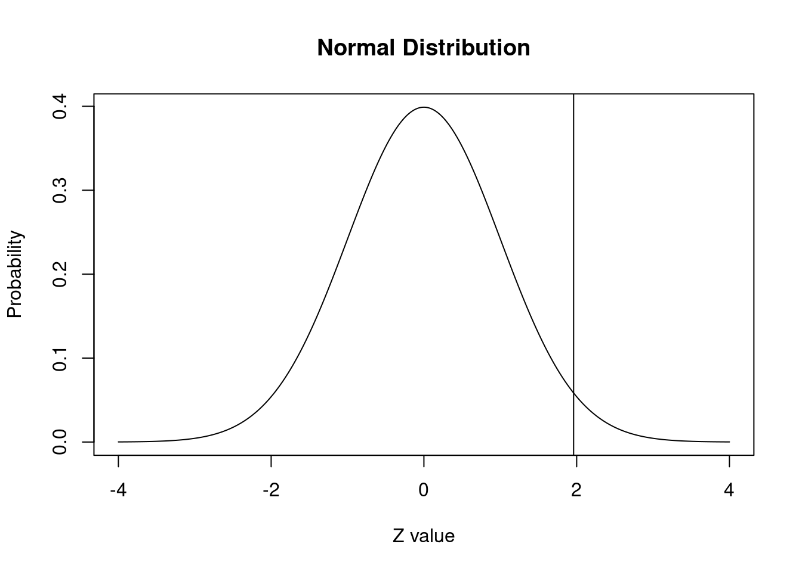
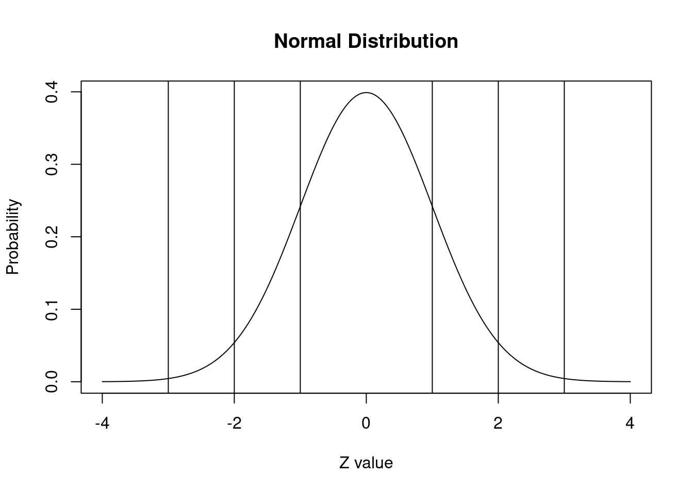
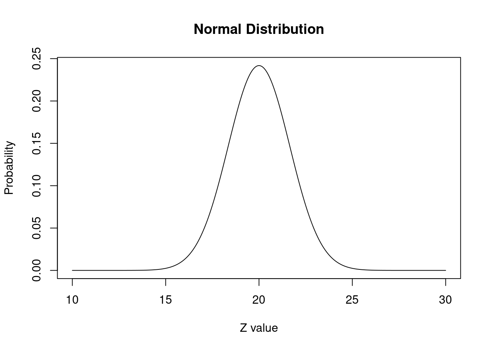
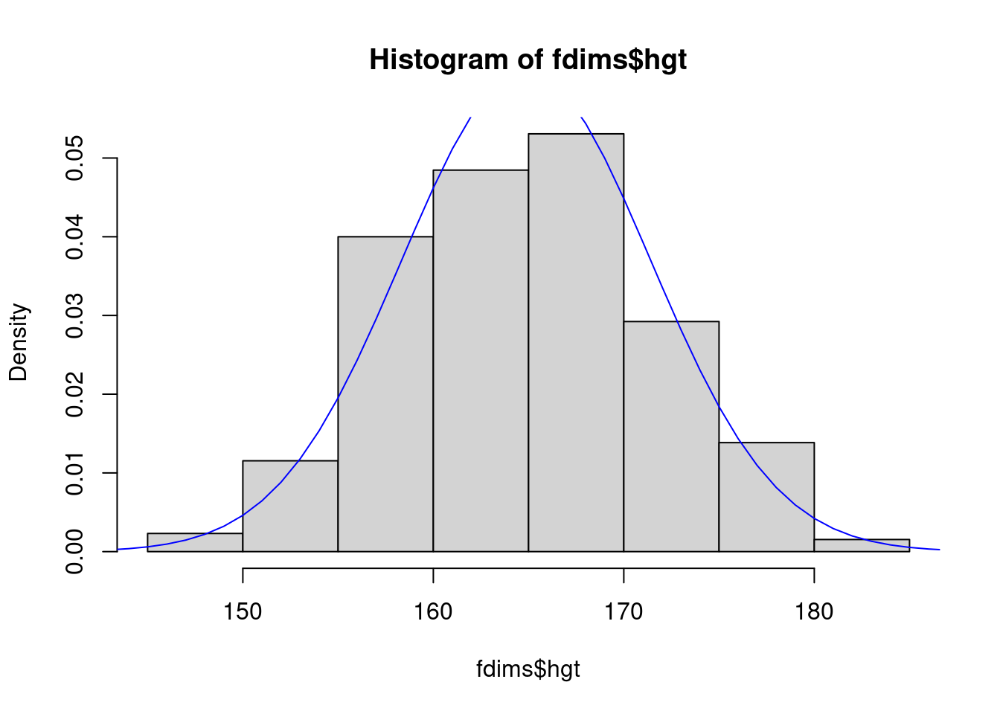

x.values = seq(-4,4, length = 1000)
y.values = dnorm(x.values)
plot(x.values, y.values, type="l", xlab="Z value", ylab="Probability", main="Normal Distribution")
Completar hasta as 11:59 PM del viernes, 8 de septiembre de 2023
Basado en https://rpubs.com/DThurtleSchmdit/533598
Para empezar, veamos la distribución normal estándar. Con R es posible generar un conjunto de datos simulados con una distribución normal. La distribución normal estándar es una distribución normal con una media de 0 y una desviación estándar de 1.
x.values = seq(-4,4, length = 1000)
y.values = dnorm(x.values)
plot(x.values, y.values, type="l", xlab="Z value", ylab="Probability", main="Normal Distribution")
Para empezar, para cada una de las 3 líneas de código, razona lo que está sucediendo. ¿Qué variables se crearon y cómo nos aseguramos de que los datos generados siguieran una distribución normal?
Ahora podemos preguntar qué parte de la curva cae por debajo de un valor particular. En este caso, preguntaremos sobre el valor 0 antes de ejecutar el código, piense cuál debería ser la respuesta.
En los ejemplos siguientes, usaremos valores z de + 1,96 y -1,96 porque sabemos que estos valores aproximados marcan el 2,5% superior e inferior de la distribución normal estándar. Esto corresponde a un alfa típico = 0,05 para una prueba de hipótesis de dos colas (sobre la cual aprenderemos más en las próximas semanas).
La respuesta nos dice lo que ya sabemos: el 97,5% de la distribución normal ocurre por debajo del valor z de 1,96.
Podemos agregar una línea al gráfico para mostrar dónde se usaría abline.
El 97,5% de la distribución queda por debajo de esta línea
plot(x.values, y.values, type="l", lty=1, xlab="Z value", ylab="Probability", main="Normal Distribution") +
abline(v = 1.96)
integer(0)Ejercicio 1: utilice la función abline() para agregar líneas en el puntaje z apropiado para demostrar el 68-95-99.7 de esta curva normal estándar.
plot(x.values, y.values, type="l", lty=1, xlab="Z value", ylab="Probability", main="Normal Distribution") +
abline(v = 1) +
abline(v = -1) +
abline(v = 2) +
abline(v = -2) +
abline(v = 3) +
abline(v = -3)
integer(0)Como se discutió en clases, también podemos hacer lo contrario, decidir primero cuánta probabilidad queremos (percentil) y luego calcular qué valores críticos están asociados con esas probabilidades. Esto utiliza la función qnorm. Si queremos saber qué valor z marca el 2,5% inferior de una distribución normal estándar, usaríamos:
Esto nos dice que el valor z de -1,96 marca el 2,5% inferior de la distribución normal estándar. Para determinar el valor z que marca el 2,5% superior de la distribución, escribo:
Ejercicio 2: Hasta ahora hemos demostrado todo con una distribución normal estándar. Pero la mayoría de las curvas normales no son normales estándar. Genere una curva (como hicimos anteriormente para la distribución normal estándar) y trácela con una media de 20 y una desviación estándar de 1,65. Identifique el valor en el que el 97,5% de la distribución cae por debajo de este valor.
x.values = seq(10,30, length = 1000)
y.values = dnorm(x.values, 20, 1.65)
plot(x.values, y.values, type="l", lty=1, xlab="Z value", ylab="Probability", main="Normal Distribution")
Ahora que hemos generado distribuciones normales, echemos un vistazo a algunos datos leídos y compárelos con la distribución normal. Ejecute las siguientes líneas de código, que cargarán un conjunto de datos de mediciones de 247 hombres y 260 mujeres, la mayoría de los cuales eran considerados adultos jóvenes sanos. Verás que por cada observación tenemos 25 medidas, muchas de las cuales son diámetros o circunferencias. Puede encontrar una clave para los nombres de las variables en http://www.openintro.org/stat/data/bdims.php, pero para comenzar nos centraremos en solo tres columnas: peso en kg (wgt), altura en cm (hgt) y sexo (1 indica hombre, 0 indica mujer).
Dado que este conjunto de datos contiene tanto hombres como mujeres, sería útil separar los datos en dos conjuntos, uno de mujeres y otro de hombres. Hay una gran función en R que puede hacer un subconjunto de una variable categórica, subset
Ejercicio 1: haz un histograma de la altura de los hombres y un histograma de la altura de las mujeres. ¿Cómo compararía los diversos aspectos de las dos distribuciones?
Ejercicio 2: scale es una función en R y se puede aplicar a cualquier vector numérico (lista de números en R). Genere los dos histogramas siguientes, esta vez graficando scale() de las estaturas y determine cómo la versión escalada de las alturas corresponde a las alturas originales. ¿Qué calcula la escala para cada punto?
Nos gustaría comparar la distribución de estaturas en este conjunto de datos con la distribución normal. Para cada uno de los histogramas de alturas (sin escalar), trace una curva normal en la parte superior del histograma.
Calcule la media y la desviación estándar para las alturas femeninas y guárdelas como variables, fhgtmean y fhgtsd, respectivamente.
Determine la lista de valores de x (el rango del eje X) y guarde este vector (lista). Puede hacer fácilmente una lista de números usando la función seq() como lo hemos hecho antes, o teniendo el límite inferior:límite superior. Por ejemplo, para generar un vector (lista de números) del 1 al 10 y guardarlo como one_ten, usaría one_ten <- 1:10.
Como arriba, use dnorm() para tomar la lista de valores de x y encontrar el valor de y correspondiente si fuera una distribución normal perfecta. Guarde este vector como la variable y. lines() puede trazar una línea en otro gráfico.
Vuelva a trazar su histograma y luego, en la siguiente línea, use líneas (x = x, y = y, col = “blue”) para dibujar una distribución normal encima. ¿Cómo cambiarías el eje y para que la curva normal no se corte?
fhgtmean <- mean(fdims$hgt)
fhgtsd <- sd(fdims$hgt)
hist(fdims$hgt, probability = TRUE)
x <- 140:190
y <- dnorm(x = x, mean = fhgtmean, sd = fhgtsd)
lines(x = x, y = y, col = "blue")
¿Cómo cambiarías el eje y para que la curva normal no se corte?
hist(fdims$hgt, probability = TRUE, ylim = c(0, .07))
x <- 140:190
y <- dnorm(x = x, mean = fhgtmean, sd = fhgtsd)
lines(x = x, y = y, col = "blue")Según este gráfico, ¿parece que los datos siguen una distribución casi normal? Haz lo mismo con las estaturas masculinas.
Respuesta: En general, sí, consideraría que estos valores siguen una distribución casi normal ya que el histograma se ajusta bastante bien a la curva.
Observe que la forma del histograma es una forma de determinar si los datos parecen estar distribuidos casi normalmente, pero puede resultar frustrante decidir qué tan cerca está el histograma de la curva. Un enfoque alternativo implica construir una gráfica de probabilidad normal, también llamada gráfica Q-Q por “quantil-quantil”. Ejecute ambas líneas juntas y luego ejecute qqline() después de qqnorm() para determinar qué está haciendo qqline().
Un QQ plot nos muestra en el eje x los cuantiles teóricos de la distribución en términos de desviaciones estandar, y en el eje y los valores de la variable. La distribución de los puntos en una línea recta es una indicación de que los datos se distribuyen normalmente.
Veamos otro ejemplo de otra variable de la base de datos:
Una vez que decidimos que una variable aleatoria es aproximadamente normal, podemos responder todo tipo de preguntas sobre esa variable relacionadas con la probabilidad. Tomemos, por ejemplo, la pregunta: “¿Cuál es la probabilidad de que una mujer adulta joven elegida al azar mida más 182 cm?” (El estudio que publicó este conjunto de datos es claro al señalar que la muestra no fue aleatoria y, por lo tanto, no se sugiere hacer inferencias sobre una población general. Lo hacemos aquí solo como un ejercicio).
Si suponemos que las alturas de las mujeres se distribuyen normalmente (una aproximación muy cercana también está bien), podemos encontrar esta probabilidad calculando una puntuación Z y consultando una tabla Z (también llamada tabla de probabilidad normal). En R, esto se hace en un solo paso con la función pnorm (como hicimos anteriormente para la distribución normal estándar).
[1] 0.9955656[1] 0.004434387¿Por qué utilizamos 1 - pnorm() en este ejemplo?
Asumir una distribución normal nos ha permitido calcular una probabilidad teórica. Si queremos calcular la probabilidad empíricamente, simplemente necesitamos determinar cuántas observaciones caen por encima de 182 y luego dividir este número por el tamaño total de la muestra.
Aunque las probabilidades no son exactamente las mismas, son razonablemente cercanas. Cuanto más cerca esté su distribución de ser normal, más precisas serán las probabilidades teóricas.
Determine la probabilidad de que una mujer mida menos de 5 pies y 2 pulgadas de altura. ¿Qué pasa con el hombre? ¿Cuál es la probabilidad de que una mujer mida entre 5 pies 2 pulgadas y 5 pies 7 pulgadas de altura?
¿Cuál es la altura en la que el 95% de las mujeres son más bajas que esta altura?
Con 5 pies y 9 pulgadas, el 95% de las mujeres están por debajo de esta altura.
Para los bdims del conjunto de datos, elija 4 variables más para evaluar si cree o no que los conjuntos de datos son normales utilizando la estrategia anterior. Para ver cuáles son las variables (y sus encabezados abreviados) puedes mirar aquí: http://www.openintro.org/stat/data/bdims.php Además, para cada variable considera si crees que es más razonable para evaluar todo el conjunto de datos juntos o los machos y las hembras por separado como lo hicimos con la altura.
Podrías crear muchos conjuntos de datos diferentes aquí, utilizando las mismas técnicas que las anteriores. Realmente te animo a que hagas esto para que puedas familiarizarte con el modelado de la distribución normal en R.
Completar el reporte de progreso correspondiente a esta práctica aquí. El plazo para contestarlo es hasta el día viernes de la semana en la que se publica la práctica correspondiente.